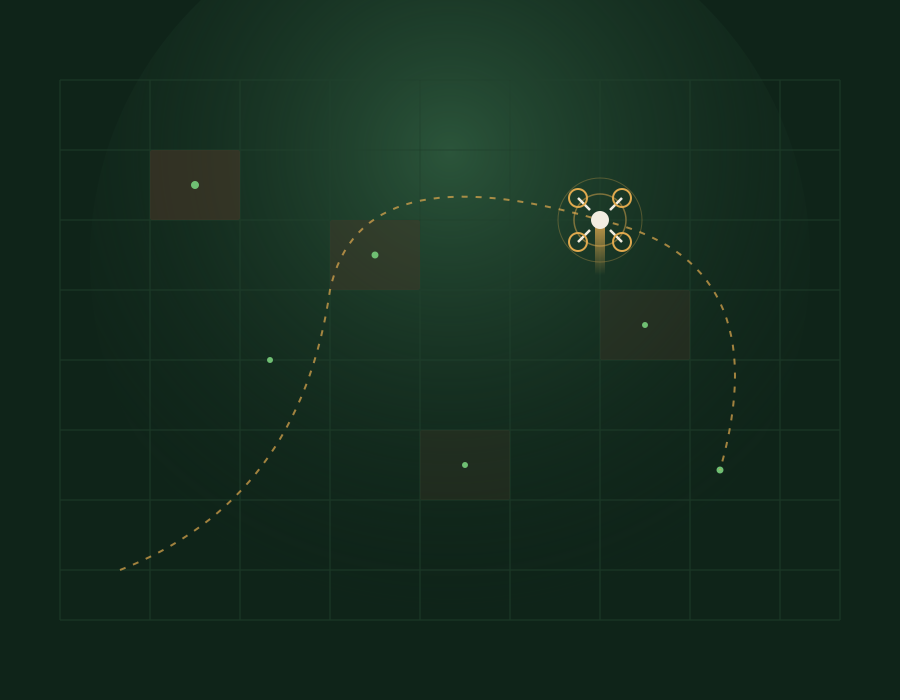

Vemos el bosque
que ya no está,
y lo devolvemos.
Ecodrones combina visión aérea y siembra de precisión para encontrar zonas deforestadas y lanzar semillas nativas exactamente donde el bosque las necesita, sin pisar el terreno.

La reforestación manual no alcanza la velocidad de la pérdida
Cada año se pierden grandes extensiones de bosque por tala, incendios y expansión agrícola. Replantar a mano es lento, caro y muchas veces inviable en terrenos de difícil acceso o zonas de riesgo.
De la imagen aérea a la semilla en tierra
Un mismo vuelo cubre las cuatro etapas del proceso, de forma autónoma.
Detección aérea
El dron sobrevuela la zona y capta imágenes multiespectrales para identificar claros y suelo degradado.
Mapa de siembra
Un modelo cruza tipo de suelo, pendiente y humedad para generar el patrón óptimo de puntos de siembra.
Cápsulas biodegradables
El dron libera cápsulas con semillas nativas y nutrientes, calibradas para cada coordenada del mapa.
Seguimiento de germinación
Vuelos de revisión periódicos miden tasa de germinación y ajustan la siguiente ronda de siembra.
Metas del proyecto
Para empezar, nos hemos propuesto 4 metas clave para la primera fase de operación.
Escaneo de zona
Mapear hectáreas prioritarias para identificar dónde se necesita ayuda y tomar decisiones basadas en datos reales.
25,000 semillas
Dispersar semillas nativas en áreas de difícil acceso, acelerando la reforestación.
Especies nativas
Sembrar solo especies de la región para asegurar la biodiversidad y el éxito de la reforestación.
80% de germinación
Monitorear el crecimiento después de la siembra para validar que nuestro método funciona y mejorar cada ciclo.
Creemos que la innovación y la naturaleza pueden ir de la mano. Por ello, cada vuelo que hacemos tiene un objetivo claro: contribuir a la restauración de ecosistemas, recuperar el suelo, sembrar vida y generar datos que le sirvan a las comunidades.
¿Tenés un terreno para reforestar, o querés apoyar el proyecto?
Contanos dónde y cómo, y evaluamos si Ecodrones puede operar en la zona.